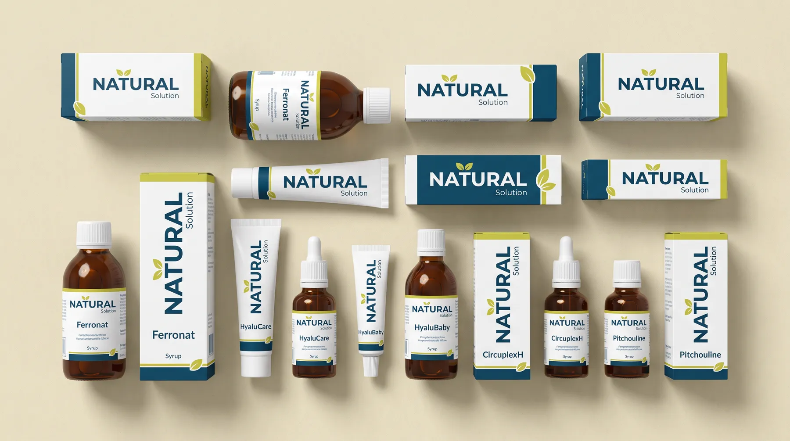
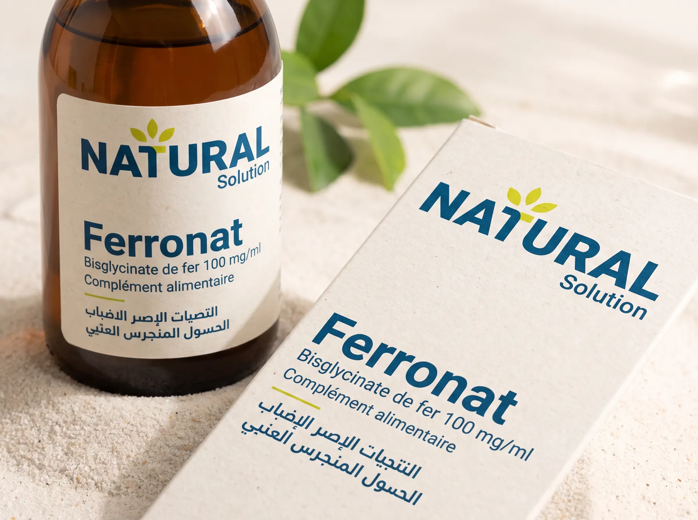
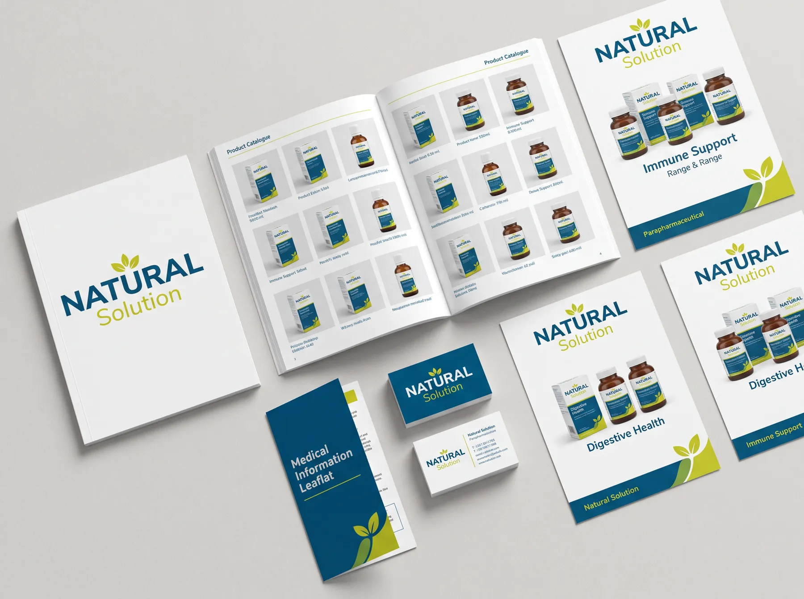
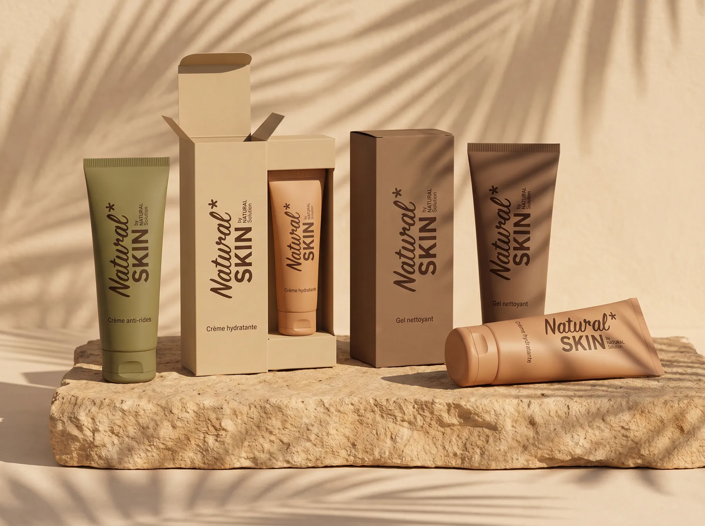
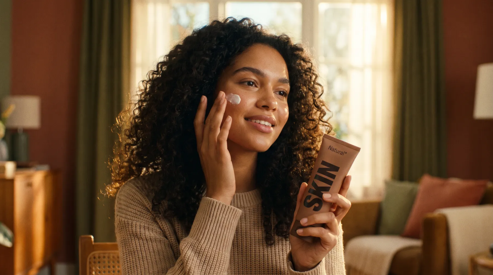

← All work · Case 2 of 3
Parapharmaceutical · Supplements & skincare
Natural Solution + Natural Skin
Thirty products and counting, with no redraw. In year three the range earned a sub-brand, and the job was deciding how little of the parent it should carry.
My roleCreative Director
Team[n] designers
Worked withFounders, marketing, pharmacists
Duration3-year partnership
ScopeTwo identities, packaging, naming, social
Products30+ SKUs

The brief
Natural Solution sells food supplements and phytotherapy through pharmacies. In this category the natural-origin claim is the reason to buy and also the reason to doubt.
The catalogue was already broad and kept growing, so the system had to work for a product count nobody could predict.
Constraints
Two failure modesToo botanical and it reads as health food. Too clinical and the natural claim disappears.
ScaleThirty-odd products must look related but stay easy to tell apart at the counter.
FormatsJar lids, boxes, bottles, flyers and phone screens need six logo formats.
A sub-brandNatural Skin needed a warmer voice without losing the parent's credibility.
Process
- MarkThree leaves forming the letter T: botanical content, typographic discipline.
- Colour ruleDeep ocean blue with yellow-green, and the green never stands alone.
- TemplatesPackaging, catalogue and social templates the client's own team uses.
- Sub-brandNatural Skin borrows the name and typeface, not the look.
- RolloutNew products added over three years without redrawing the system.




Results
30+SKUs on one system
0redraws in three years
6logo formats drawn up front
[figure]Natural Skin sales or reach in year one
[Short quote from the Natural Solution reference letter.]
Relevant for your team
A Swiss consumer-health portfolio has the same tension between natural claims and clinical credibility, and the same need for a system that the in-house team can extend without an agency.